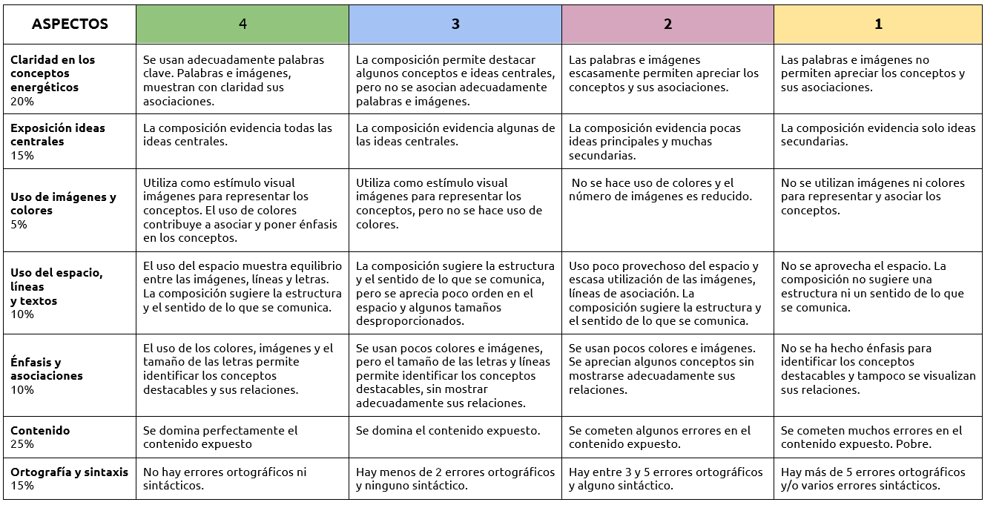
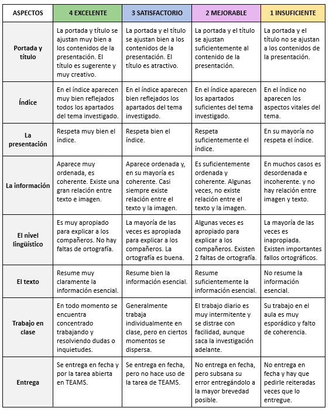

El fin de esta tarea es realizar un trabajo de investigación sobre temas de actualidad en el campo de la energía por parejas en el aula de informática.
Cada pareja trabaja durante 3 sesiones sobre el tema propuesto por el docente y escogidos por los discentes. Aquellos temas que no sean escogidos para esta tarea serán desarrollados por el profesor y subidos a Aulas Virtuales como objeto de estudio para el Forms final de la SdA, al igual que estos trabajos. Temas:
1- Un viaje al pasado, ¿y al presente?: El carbón:
Qué es el carbón como combustible (tipos y propiedades), funcionamiento central térmica convencional, efectos medioambientales del carbón, situación actual en España frente a Alemania y la historia reciente del carbón en Asturias (mapa de pozos mineros y centrales térmicas)
2- ¿Por qué en Francia sí y aquí no?: La energía nuclear:
En qué consiste la fisión nuclear (funcionamiento central nuclear), materiales empleados (¿hay minas en España?), efectos medioambientales (cementerios de residuos radiactivos), estado actual en España y la comparativa con Francia. Introducción a la fusión nuclear.
3- Un bien prohibido en España: El gas natural:
¿Qué es?, propiedades, obtención, ¿para qué se usa?, funcionamiento de las plantas de ciclo combinado, red de gaseoductos en España, transporte marítimo, ¿qué son los gasómetros de Gijón?, ¿en qué consiste el fracking y por qué está prohibido en España?
4- El oro negro: El petróleo:
Propiedades, obtención y productos que se pueden fabricar, usos, efectos medioambientales, plataformas y red de oleoductos en España. Transporte marítimo. ¿A quién se compra?
5- Un paso hacia el futuro: El ahorro y la eficiencia energética:
¿Qué son los ODS? El desarrollo sostenible. ODS sobre energía (qué se pide y qué se está implementando) Técnicas de ahorro energético. Eficiencia energética de edificios (la etiqueta y aspectos necesarios para su cálculo). Ahorro en la industria: Industria 4.0.
6- ¿Por qué está la electricidad tan cara?: El mercado eléctrico español y el transporte de energía eléctrica:
Explicar cómo funciona el mercado eléctrico español, poniendo un ejemplo diario (pool eléctrico). ¿De qué depende el precio de la energía? ¿Quién es el responsable? ¿es lógico su funcionamiento? La Red Eléctrica: Esquema y tipos de redes (funcionamiento).
7- La transición energética en Asturias I: Energía hidráulica:
Funcionamiento de una central hidroeléctrica, tipos de turbinas, situación en Asturias de centrales. Impacto ambiental. Situación en España (¿Dónde hay?, ¿Cuánto produce de electricidad?)
8- La transición energética en Asturias II: Energía eólica:
Funcionamiento central eólica (molinos y tipos de aeroturbinas), Explicar el auge de la energía eólica offshore (funcionamiento y forma de la estructura). Potencial de esta energía en Asturias y en España. Impacto ambiental.
9- El sol, una fuente inagotable de energía: Energía solar:
Explicación de la energía solar fotovoltaica (funcionamiento, materiales de los que se fabrican las placas solares). ¿Dónde está más extendido en España? ¿Qué potencial tiene? Explicación de la energía solar térmica (funcionamiento y uso) ¿En qué lugares existen centrales termosolares? ¿En qué consistió el famoso impuesto al sol aprobado en España hace unos años?
10- ¿Es el mar un aliado energético?: Energía mareomotriz y undimotriz:
Explicar en qué consiste cada tipo (funcionamiento, tipos de instalaciones), su potencial en España y Asturias y su empleo actual. Impacto ambiental.
11- La Tierra y sus riquezas: Energía geotérmica y biomasa:
Estudio de la geotermia (funcionamiento y usos). Empleo en España y Asturias. ¿Cómo funciona el Hospital de Mieres? ¿Qué es la biomasa? Cómo se obtiene y de qué forma se usa. Empleo actual en España. Impacto ambiental.
12- El transporte del futuro, ¿y del presente?: Coches eléctricos y el hidrógeno:
¿Cómo funcionan los coches eléctricos? Impacto ambiental no solo de uso, sino también en la fabricación y retirada de las baterías. ¿Es de verdad el futuro? El hidrógeno como futuro combustible. ¿Cómo se obtiene? Su funcionamiento. Problemas actuales. Asturias como posible lugar estratégico en la producción, transporte y distribución del hidrógeno.
Toda esta investigación se plasmará mediante la creación de una presentación de 10 a 12 diapositivas y su posterior resumen como infografía empleando herramientas TICs (PowerPoint, Canva, Genially, ...).
Metodología: El trabajo se basa en el aprendizaje cooperativo y por descubrimiento pues, los alumnos, con las premisas iniciales del docente, deben lograr el objetivo planteado, entender y aprender aspectos sobre energías que se encuentran a la orden del día en sociedad debido a la crisis energética mundial que se está viviendo.
Recursos materiales: Ordenador con internet.
Fechas: 29, 30 y 31 de octubre de 2025.
El profesor guiará en todo momento a los estudiantes durante su investigación.
En caso de no terminar en las sesiones planteadas, se deberá finalizar en casa y la entrega será para todos por Aulas Virtuales.
Esta actividad forma parte del Plan de Lectura, Escritura e Investigación (PLEI). Las infografías serán impresas y colgadas por el centro como forma de divulgación y concienciación energética.
La evaluación y calificación de esta tarea tiene dos partes con le 50% de peso cada una:
Rúbrica para evaluar la infografía:

Rúbrica de la presentación:

Con esta actividad se están trabajando los siguientes criterios de evaluación y sus correspondientes competencias específicas de la legislación actual:
Competencia Específica 1. Coordinar y desarrollar proyectos de investigación con una actitud crítica y emprendedora, implementando estrategias y técnicas eficientes de resolución de problemas y comunicando los resultados de manera adecuada, para crear y mejorar productos y sistemas de manera continua.
1.4. Elaborar documentación técnica con precisión y rigor, generando diagramas funcionales y utilizando medios manuales y aplicaciones digitales.
Competencia Específica 3. Utilizar las herramientas digitales adecuadas, analizando sus posibilidades, configurándolas de acuerdo a sus necesidades y aplicando conocimientos interdisciplinares, para resolver tareas, así como para realizar la presentación de los resultados de una manera óptima.
3.1. Resolver tareas propuestas y funciones asignadas, mediante el uso y configuración de diferentes herramientas digitales de manera óptima y autónoma.
3.2. Realizar la presentación de proyectos empleando herramientas digitales adecuadas.
Competencia Específica 6. Analizar y comprender sistemas tecnológicos de los distintos ámbitos de la ingeniería, estudiando sus características, consumo y eficiencia energética, para evaluar el uso responsable y sostenible que se hace de la tecnología.
6.1. Evaluar los distintos sistemas de generación de energía eléctrica y mercados energéticos, estudiando sus características, calculando sus magnitudes y valorando su eficiencia.
Además, se trabajan las siguientes competencias clave: Competencia en comunicación lingüística, Competencia digital, Competencia matemática y en ciencia, tecnología e ingeniería, Competencia personal, social y de aprender a aprender, Competencia ciudadana y Competencia en conciencia y expresiones culturales.